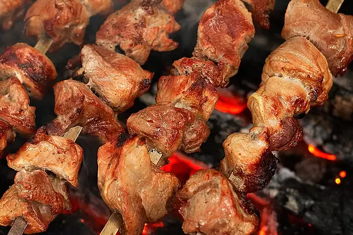

Grandpa Nick's Georgia Shashlik

Description
This shashlik recipe was brought over from what is now the Republic of Georgia in the early 1900s.
Traditionally, the men gathered to "put down" the lamb, enjoying friendship along with the leftover wine.
They used family heirloom skewers (designated by their unique twisted handles) to grill the meat over wood coals.
This amazing, yet simple recipe, was served at my wedding. It is rich in flavor, memories, and traditions.
I hope you enjoy and start your own traditions.
Ingredients
- 1 medium lemon
- 2 cups red wine
- ½ large red onion, cut into chunks
- 6 cloves garlic, chopped, or more to taste
- 1 teaspoon salt
- 1 teaspoon ground black pepper
- 2 ½ pounds lamb, cut into 1-inch pieces
- skewers, as needed
Steps
- Cut lemon in half and juice. Cut 2 rinds into chunks.
- Place lemon juice and rinds into a large glass or ceramic bowl with red wine, onion, garlic, salt, and pepper; mix well. Add lamb and toss to evenly coat. Cover the bowl with plastic wrap and marinate in the refrigerator for at least 8 hours or up to 18 hours.
- Remove lamb from the marinade and shake off excess. Discard the remaining marinade. Thread lamb on to skewers
- Preheat an outdoor grill for medium heat and lightly oil the grate.
- Cook skewers, turning occasionally, on the preheated grill until an instant-read thermometer inserted into the center of the meat reads at least 130 degrees F (60 degrees C) for medium, about 15 minutes.
Back Homepage